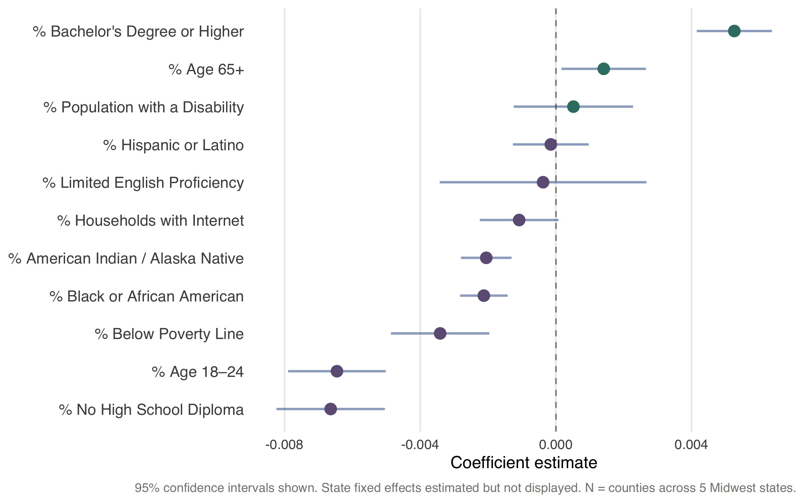
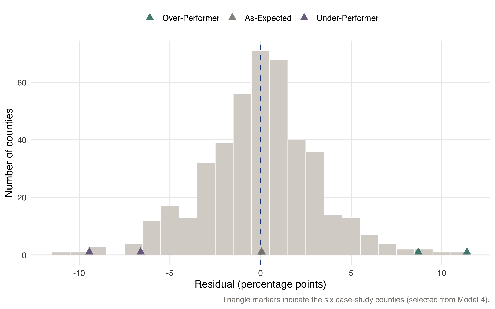
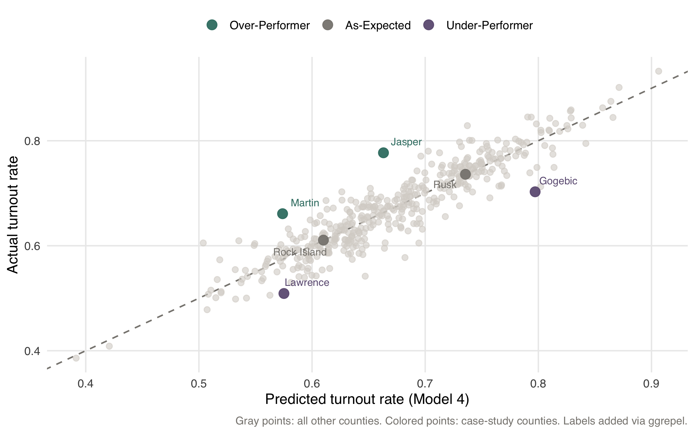

Methodology
This analysis uses Ordinary Least Squares (OLS) regression to model county-level voter turnout rates as a function of structural predictors from the American Community Survey. The unit of analysis is the county; the outcome variable is the county-level turnout rate calculated using CVAP denominators.
Rather than relying on a single specification, the analysis builds up four nested models. Each adds variables to its predecessor, and comparing across them shows which findings are robust and which are artifacts of model specification.
Model 1 — original CLC-derived structural predictors (5 variables):
\[\text{Turnout}_i = \beta_0 + \beta_1(\text{Bachelor's}_i) + \beta_2(\text{Internet}_i) + \beta_3(\text{LEP}_i) + \beta_4(\text{Disability}_i) + \beta_5(\text{Poverty}_i) + \varepsilon_i\]
Model 2 — adds lower-tail education and racial composition (7 variables): adds % no high school diploma and % Black or African American to Model 1.
Model 3 — adds state fixed effects: adds a categorical indicator for state, allowing the intercept to vary by state and absorbing state-level institutional context (registration rules, ballot access, election administration).
Model 4 — comprehensive specification: adds % Hispanic / Latino, % American Indian / Alaska Native, % age 18–24, and % age 65+ to Model 3. This is the preferred specification and drives case selection.
In each model, \(i\) indexes counties and \(\varepsilon_i\) is the residual — the quantity of primary analytic interest.
Why OLS? The goal is not prediction accuracy per se, but residual interpretation. OLS produces easily interpretable residuals in the original units (percentage points of turnout) and makes assumptions transparent. Comparing residuals across nested specifications surfaces which county-level outliers persist as the model becomes more comprehensive — those persistent outliers are the strongest candidates for qualitative investigation.
Model Results
| Model | R² | Adj. R² | RMSE (pp) | AIC | BIC | df (residual) | N |
|---|---|---|---|---|---|---|---|
| Model 1: CLC framework (5 vars) | 0.440 | 0.434 | 6.32 | -1165.4 | -1136.8 | 431 | 437 |
| Model 2: + no HS + Black | 0.543 | 0.536 | 5.72 | -1250.4 | -1213.7 | 429 | 437 |
| Model 3: + state fixed effects | 0.813 | 0.808 | 3.68 | -1631.7 | -1578.6 | 425 | 437 |
| Model 4: full (age + Hispanic + AI/AN) | 0.860 | 0.855 | 3.19 | -1752.2 | -1682.8 | 421 | 437 |
The largest fit gain comes from adding state fixed effects (Model 2 → Model 3): adjusted R² rises from roughly 0.54 to 0.81, indicating that state-level institutional context absorbs much of the unexplained variance. Adding age structure and corrected race variables (Model 3 → Model 4) yields a further gain to roughly 0.86 — meaningful but smaller, suggesting that state context is the single most important addition. The progression also confirms why Model 4 is the preferred specification for case selection: outliers identified under Model 4 have already been adjusted for both state context and demographic detail.
| Predictor | Estimate | Std. Error | 95% CI Low | 95% CI High | p-value | |
|---|---|---|---|---|---|---|
| % Bachelor’s Degree or Higher | 0.0053 | 0.0006 | 0.0042 | 0.0064 | 0.0000 | *** |
| % No High School Diploma | -0.0066 | 0.0008 | -0.0082 | -0.0050 | 0.0000 | *** |
| % Black or African American | -0.0021 | 0.0004 | -0.0028 | -0.0014 | 0.0000 | *** |
| % Hispanic or Latino | -0.0002 | 0.0006 | -0.0013 | 0.0010 | 0.7898 | |
| % American Indian / Alaska Native | -0.0021 | 0.0004 | -0.0028 | -0.0013 | 0.0000 | *** |
| % Age 18–24 | -0.0065 | 0.0007 | -0.0079 | -0.0050 | 0.0000 | *** |
| % Age 65+ | 0.0014 | 0.0006 | 0.0002 | 0.0027 | 0.0266 |
|
| % Households with Internet | -0.0011 | 0.0006 | -0.0022 | 0.0001 | 0.0670 | † |
| % Limited English Proficiency | -0.0004 | 0.0016 | -0.0034 | 0.0027 | 0.8071 | |
| % Population with a Disability | 0.0005 | 0.0009 | -0.0012 | 0.0023 | 0.5647 | |
| % Below Poverty Line | -0.0034 | 0.0007 | -0.0049 | -0.0020 | 0.0000 | *** |
| Significance: | ||||||
| † p < .10 * p < .05 ** p < .01 *** p < .001 |
Model 4 fit: R² = 0.86, Adjusted R² = 0.855, RMSE = 3.13 percentage points. The model explains approximately 86% of variance in county-level turnout rates.

Model 4 point estimates and 95% confidence intervals (state fixed effects suppressed). Estimates represent change in turnout rate per one-percentage-point change in predictor.
Residuals
The distribution of Model 4 residuals reveals whether the comprehensive specification systematically over- or under-predicts for any subset of counties. A well-behaved residual distribution should be approximately normal with mean zero.

Distribution of Model 4 residuals (actual − predicted turnout rate, in percentage points). Counties selected as case studies are marked.

Each point is a county. The dashed line represents perfect prediction (residual = 0). Points above the line over-performed; points below under-performed. Predictions from Model 4.
Case Selection
| County | State | Tier | Actual (%) | Predicted (%) | Residual (pp) | Rank (m4) |
|---|---|---|---|---|---|---|
| Jasper | Illinois | Over-Performer | 77.7 | 66.3 | 11.4 | 437 |
| Martin | Indiana | Over-Performer | 66.1 | 57.4 | 8.7 | 434 |
| Rock Island | Illinois | As-Expected | 61.1 | 61.0 | 0.1 | 214 |
| Rusk | Wisconsin | As-Expected | 73.6 | 73.6 | 0.1 | 212 |
| Lawrence | Illinois | Under-Performer | 50.9 | 57.5 | -6.6 | 7 |
| Gogebic | Michigan | Under-Performer | 70.3 | 79.7 | -9.4 | 3 |
The selection pairs one extreme + one moderate county in each tail (over- and under-performers) so the qualitative analysis can show the pattern holds beyond just the most extreme outliers. The two as-expected counties — Rock Island (IL) and Clark (IN) — sit adjacent to the median rank with residuals near zero, providing clean baselines where Model 4 predicts almost exactly right.
Limitations This model is cross-sectional and observational. Coefficients should not be interpreted as causal effects. OLS assumes linearity, homoscedasticity, and no perfect multicollinearity; these assumptions are assessed but not guaranteed to hold across all counties. Model 4 includes state fixed effects but not interactions between state and substantive predictors — the marginal effect of each predictor is constrained to be the same in every state. Some predictors (e.g., percent Hispanic, percent limited English) attenuate to non-significance in the full model, likely because related variables (state context, age structure) absorb shared variance; this is expected in nested-spec progressions.